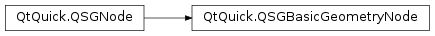

QSGBasicGeometryNode¶
Inherited by: QSGGeometryNode, QSGSimpleRectNode, QSGSimpleTextureNode, QSGClipNode
Synopsis¶
Functions¶
- def
clipList() - def
geometry() - def
matrix() - def
setGeometry(geometry) - def
setRendererClipList(c) - def
setRendererMatrix(m)
Detailed Description¶
The
PySide2.QtQuick.QSGBasicGeometryNodeclass serves as a baseclass for geometry based nodes.The
PySide2.QtQuick.QSGBasicGeometryNodeclass should not be used by itself. It is only encapsulates shared functionality between thePySide2.QtQuick.QSGGeometryNodeandPySide2.QtQuick.QSGClipNodeclasses.Note
All classes with QSG prefix should be used solely on the scene graph’s rendering thread. See Scene Graph and Rendering for more information.
-
class
PySide2.QtQuick.QSGBasicGeometryNode(type)¶ Parameters: type – PySide2.QtQuick.QSGNode.NodeTypeCreates a new basic geometry node of type
type
-
PySide2.QtQuick.QSGBasicGeometryNode.clipList()¶ Return type: PySide2.QtQuick.QSGClipNodeWill be set during rendering to contain the clip of the geometry for that rendering pass.
-
PySide2.QtQuick.QSGBasicGeometryNode.geometry()¶ Return type: PySide2.QtQuick.QSGGeometryReturns this node’s geometry.
The geometry is null by default.
-
PySide2.QtQuick.QSGBasicGeometryNode.matrix()¶ Return type: PySide2.QtGui.QMatrix4x4Will be set during rendering to contain transformation of the geometry for that rendering pass.
-
PySide2.QtQuick.QSGBasicGeometryNode.setGeometry(geometry)¶ Parameters: geometry – PySide2.QtQuick.QSGGeometrySets the geometry of this node to
geometry.If the node has the flag
QSGNode.OwnsGeometryset, it will also delete the geometry object it is pointing to. This flag is not set by default.If the geometry is changed without calling again, the user must also mark the geometry as dirty using
QSGNode.markDirty().
-
PySide2.QtQuick.QSGBasicGeometryNode.setRendererClipList(c)¶ Parameters: c – PySide2.QtQuick.QSGClipNode
-
PySide2.QtQuick.QSGBasicGeometryNode.setRendererMatrix(m)¶ Parameters: m – PySide2.QtGui.QMatrix4x4
© 2018 The Qt Company Ltd. Documentation contributions included herein are the copyrights of their respective owners. The documentation provided herein is licensed under the terms of the GNU Free Documentation License version 1.3 as published by the Free Software Foundation. Qt and respective logos are trademarks of The Qt Company Ltd. in Finland and/or other countries worldwide. All other trademarks are property of their respective owners.